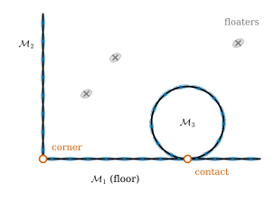
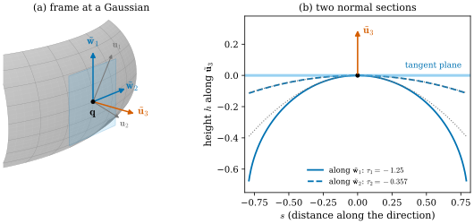

49.2 Preliminaries: Rendering, Merged Local Manifolds, Varifolds
Goals
- 3DGS의 rendering 식 두 개(논문 식 (1)–(2))를 읽고, 그 안에서 GeoSplat이 손대는 양(중심 \(\boldsymbol{\mu}^i\)와 covariance \(\boldsymbol{\Sigma}^i\))과 손대지 않는 양을 구별할 수 있다.
- merged local manifolds(Definition 2.1)가 무엇을 허용하고 무엇을 가정하는지 예로 설명할 수 있다. 특히 singular point가 measure zero여도 유한한 이웃 크기에서는 무시할 수 없다는 것을 계산으로 보일 수 있다.
- Gaussian 하나에 붙는 first order 양(tangent basis, normal)과 second order 양(principal curvature와 direction)을 이 study set의 shape operator \(W = -d\mathbf{N}\)으로 옮길 수 있다.
- 부록 A의 Riemannian 언어와 varifold 요약(식 (13)–(18))을 Chapter 24와 Chapter 46의 정의에 하나씩 대응시키고, 식 (14)의 부호 문제를 설명할 수 있다.
Prerequisites
- Section 49.1, 특히 기호표 Table 49.1.1.
- splatting은 differential에 의한 pushforward라는 것((29.3.4))과 3DGS의 Gaussian에는 정규화 상수가 없다는 것(Section 29.1).
- varifold, mass, rectifiable varifold, point cloud varifold(Section 46.4), first variation과 generalized mean curvature(Section 46.5), tangential divergence(Definition 46.3.5).
- principal curvature와 principal direction(Definition 8.3.4). curvature operator \(R\)은 Chapter 24에서 다룬다. 이 절에서는 정의와 부호만 쓴다.
Motivation
논문 §2는 세 가지를 정한다. Gaussian이 그림을 만드는 방식(rendering), Gaussian이 놓여 있다고 가정하는 기하적 세계(manifold 또는 varifold), 그리고 Gaussian 하나마다 붙일 기하량(normal, principal curvature와 direction)이다. 논문에서 각각은 한두 문단이고, 부록 A가 Riemannian geometry와 varifold를 짧게 복습한다.
이 절은 그 짧은 문단들을 천천히 읽으면서, 각 문장을 이 study set에서 이미 본 정의에 붙인다. 새로운 수학은 거의 없다. 대신 두 곳에서 주의가 필요하다. 하나는 Definition 2.1의 “measure zero인 singular point”라는 가정이 실제 estimator의 크기에서는 얼마나 큰지이고, 다른 하나는 부록 A의 sectional curvature 식 (14)의 부호다.
Rendering in Two Equations
논문 §2.1은 3DGS [Kerbl23]를 두 식으로 요약한다. 장면은 Gaussian primitive의 모임 \(\{\mathcal{G}^i\}_{i \in \mathcal{I}}\)이고, \(\mathcal{G}^i\)는 opacity \(\alpha^i\), RGB 색 \(\mathbf{c}^i \in \R^3\), 중심 \(\boldsymbol{\mu}^i \in \R^3\), covariance \(\boldsymbol{\Sigma}^i = \mathbf{R}^i\mathbf{S}^i(\mathbf{R}^i\mathbf{S}^i)^{\mathsf T}\)를 가진다((29.2.1)). 픽셀 \(\mathbf{p}\)의 색은 splatting과 blending 두 단계로 만든다. 먼저 splatting은 3D Gaussian \(\mathcal{N}(\boldsymbol{\mu}^i, \boldsymbol{\Sigma}^i)\)를 이미지 평면의 2D Gaussian으로 보낸다 [GeoSplat25, eq. (1)].
여기서 \(\mathbf{T}_{\text{pose}} \in SE(3)\)는 rotation \(\mathbf{W}_{\text{pose}}\)와 translation \(\mathbf{b}_{\text{pose}}\)로 이루어진 camera pose, \(\Pi\)는 3D 좌표를 2D로 보내는 projection, \(\mathbf{J}\)는 그 Jacobian이다. 이것은 (29.3.4)와 같은 식이다. covariance는 projection의 differential로 밀려 간다. 다음으로 blending은 픽셀의 색을
로 정한다 [GeoSplat25, eq. (2)]. Gaussian은 카메라에서 가까운 순서로 번호가 매겨져 있고(\(j \lt i\)이면 \(\mathcal{G}^j\)가 앞에 있다), \(\beta^k(\mathbf{p})\)는 \(\mathcal{G}^k\)가 픽셀 \(\mathbf{p}\)에서 빛을 가리는 정도다. 곱 \(\prod_{j \lt i}(1 - \beta^j)\)은 앞의 Gaussian들을 모두 통과하고 남은 빛의 비율(transmittance)이다. 학습은 이렇게 렌더링한 이미지를 실제 이미지에 맞추는 것이다.
GeoSplat은 (49.2.1)과 (49.2.2)를 바꾸지 않는다. 바꾸는 것은 이 식에 들어가는 \(\boldsymbol{\mu}^i\)와 \(\boldsymbol{\Sigma}^i\), 곧 Gaussian의 위치와 모양을 어떻게 초기화하고, 어떻게 gradient로 움직이고, densification에서 어디에 새로 놓는지다(Section 49.3). opacity와 색은 원래 3DGS대로 학습한다.
Problem Formulation
논문 §2.2는 목표를 둘로 정한다. 다양한 geometric prior, 특히 curvature 같은 higher order prior를 3DGS 최적화에 쓰는 것, 그리고 그 prior를 잡음에 강하게 추정하는 것이다. 논문은 geometric regularization을 다룬 최근 연구(GausSurf [Wang24]와 GeoGaussian [Li25])가 이 두 면을 거의 다루지 않았다고 쓴다 [GeoSplat25, §2.2].
그다음 논문은 Gaussian이 놓인 세계를 두 가지 언어로 설정한다. 하나는 manifold(아래 merged local manifolds)이고, 다른 하나는 varifold(아래 Varifolds)다. 두 언어는 Section 49.4의 두 estimator에 각각 대응한다.
Merged Local Manifolds
부록 A.1의 Riemannian manifold는 모든 점에서 smooth해야 한다. 실제 물체는 그렇지 않은 경우가 많다. 논문의 예는 사과다. 꼭지가 몸통과 만나는 곳은 singular point다. 방 안의 장면도 그렇다. Figure 49.2.1은 방을 수직으로 자른 cross-section이다. 바닥 \(\mathcal{M}_1\), 벽 \(\mathcal{M}_2\), 바닥에 놓인 공 \(\mathcal{M}_3\)의 세 곡선이 있다. 각 곡선은 대부분 smooth하지만, 바닥과 벽이 만나는 모서리(corner)와 공이 바닥에 닿는 점(contact)은 그렇지 않다. 하늘색 납작한 타원이 곡선 위에 놓인 Gaussian이고, 회색 x는 어느 곡선에도 놓이지 않은 floater다.

논문은 이런 장면을 담으려고 manifold보다 약한 설정을 둔다.
Definition 49.2.1 (merged local manifolds) [GeoSplat25, Def. 2.1]. Gaussian primitive \(\{\mathcal{G}^i\}_{i \in \mathcal{I}}\)는 유한 개의 continuous manifold \(\{\mathcal{M}_j\}_{j \in \mathcal{J}}\)로 이루어진 3D 장면 안에 놓여 있다. 각 \(\mathcal{M}_j\)는 measure zero인 singular point의 집합을 빼면 smooth하다. 이런 장면을 merged local manifolds(병합된 국소 다양체)라 한다.
보통의 manifold와 다른 점은 두 가지다. 장면이 여러 조각(독립인 물체들)으로 이루어질 수 있고, 각 조각은 singular point를 가질 수 있다. 논문은 measure zero 조건이 중요하다고 쓴다. 그 덕분에 장면의 거의 모든 점 \(\mathbf{q}\)가 smooth manifold로 볼 수 있는 국소 영역 안에 있기 때문이다. novel view synthesis에서 각 \(\mathcal{M}_j\)는 2차원 surface이고(\(D_{\mathcal{M}_j} = 2\)), ambient space는 \(\mathcal{E} = \R^3\)이다(\(D_{\mathcal{E}} = 3\)).
정의를 읽을 때 세 가지를 짚어 두자. 아래는 이 장의 해석이다.
- 어떤 measure인가. 논문은 밝히지 않는다. 3차원 Lebesgue measure로 읽으면 surface 전체가 이미 measure zero라서 조건이 비어 버린다. 그러므로 각 \(\mathcal{M}_j\) 위의 넓이, 곧 Hausdorff measure \(\mathcal{H}^2\)(Definition 46.2.3)로 읽는 것이 자연스럽다. 모서리 선이나 vertex는 \(\mathcal{H}^2\)로 measure zero다.
- 조각이 만나는 곳. Figure 49.2.1의 contact는 어느 한 조각의 singular point가 아니다. 공과 바닥은 각각 smooth하고, 둘이 한 점에서 만날 뿐이다. 반면 corner는 바닥과 벽을 두 조각으로 보면 두 조각이 만나는 곳이고, L자 하나로 보면 그 조각의 singular point다. 정의는 어느 쪽으로 읽어도 된다.
- 정의가 실제로 쓰이는 방식. 이 정의는 뒤의 증명에서 정량적으로 쓰이지 않는다. 쓰이는 것은 그 뒤의 작업 가정이다. “Gaussian \(\mathcal{G}^i\)는 어떤 surface \(\mathcal{M}_j\) 위의 점 \(\mathbf{q} = \boldsymbol{\mu}^i\)에 놓여 있고, 그 근처에서 \(\mathcal{M}_j\)는 smooth하다.” 그래서 \(\mathbf{q}\)에서 tangent space, normal, curvature를 말할 수 있다(아래).
“measure zero이므로 거의 모든 점에서 괜찮다”는 말은 극한에서는 맞다. 그러나 Section 49.4–49.5의 estimator는 반지름이 유한한 이웃을 쓴다(kernel의 폭 \(\sqrt t\)나 \(\varepsilon\)). 그 크기에서 singular set이 얼마나 넓게 영향을 주는지 재 보자.
Example 49.2.2 (measure zero is not negligible at a finite scale). 방을 한 변이 \(1\)인 정육면체의 겉면이라 하자. face가 \(6\)개, 넓이가 \(6\)이고, singular set은 모서리 \(12\)개다. 모서리는 \(\mathcal{H}^2\)로 measure zero다. 이제 estimator가 반지름 \(\delta\)의 이웃을 본다고 하자. 이웃이 모서리에 걸치는 점, 곧 모서리에서 거리 \(\delta\) 안에 있는 점의 비율은 한 face(단위 정사각형)에서 boundary까지 거리가 \(\delta\)보다 작은 부분의 넓이와 같으므로
이다. \(\delta = 0.05\)(방 크기의 \(5\%\))이면 \(0.19\), 곧 surface의 \(19\%\)에서 이웃이 두 face에 걸친다. 이런 점에서는 이웃 안의 Gaussian 중심들이 하나의 smooth surface에서 오지 않으므로, “국소적으로 smooth manifold”라는 가정이 estimator의 크기에서 깨진다. 정육면체 겉면에서 점 \(400{,}000\)개를 고르게 뽑아 세면 \(0.19\)와 \(0.003\) 안에서 맞는다.
Verification: verify/v-49-2-preliminaries.py
이 장의 평가: 논문은 singular set 근처에서 두 estimator가 어떻게 동작하는지 다루지 않는다. 실내 장면(Replica, ICL)은 벽, 바닥, 가구의 모서리가 많으므로 이 영향은 작지 않을 수 있다. 다만 GeoSplat이 모서리 근처의 Gaussian에 엉뚱한 curvature를 주더라도, 그 결과가 렌더링 품질에 얼마나 영향을 주는지는 논문의 실험으로는 알 수 없다. 또 Definition 2.1과 작업 가정은 floater를 배제하지만, 3DGS 학습은 floater를 만든다. 곡선 밖의 Gaussian에 estimator가 어떤 값을 주는지도 논문은 말하지 않는다. 이 두 점은 Section 49.7에서 다시 모은다.
Geometry at One Gaussian
작업 가정 아래에서 논문은 Gaussian마다 기하량을 붙인다 [GeoSplat25, §2.2]. \(\mathcal{G}^i\)가 surface \(\mathcal{M}\) 위의 점 \(\mathbf{q} = \boldsymbol{\mu}^i\)에 있다고 하자(각 Gaussian에 surface가 하나뿐이므로 첨자 \(j\)는 생략한다).
- first order: tangent space \(T_{\mathbf{q}}\mathcal{M}\)의 orthonormal basis \(\{\mathbf{u}^i_d\}_{1 \le d \le D_{\mathcal{M}}}\)와 normal space \(N_{\mathbf{q}}\mathcal{M}\)의 basis \(\{\tilde{\mathbf{u}}^i_d\}_{D_{\mathcal{M}} + 1 \le d \le D_{\mathcal{E}}}\). \(\R^3\)의 surface에서는 \(\mathbf{u}^i_1, \mathbf{u}^i_2\)와 unit normal \(\tilde{\mathbf{u}}^i_3\) 하나다.
- second order: principal curvature와 principal direction의 쌍 \(\{(\tau^i_d, \tilde{\mathbf{w}}^i_d)\}_{1 \le d \le D_{\mathcal{M}}}\). 논문의 말로는 “surface가 방향 \(\tilde{\mathbf{w}}^i_d\)로 크기 \(\tau^i_d\)만큼 휜다.”
이 study set의 말로 옮기면 이렇다. normal \(\tilde{\mathbf{u}}^i_3\)를 하나 고르면 shape operator \(W = -d\mathbf{N}\)이 정해지고, \(\tau^i_1, \tau^i_2\)는 그 eigenvalue, \(\tilde{\mathbf{w}}^i_1, \tilde{\mathbf{w}}^i_2\)는 orthonormal eigenvector다(Definition 8.3.4). 순서는 Table 49.1.1대로 크기 순 \(\abs{\tau^i_1} \ge \abs{\tau^i_2}\)이다. “방향 \(\tilde{\mathbf{w}}_d\)로 \(\tau_d\)만큼 휜다”는 \(\tilde{\mathbf{w}}_d\)와 \(\tilde{\mathbf{u}}_3\)가 펼치는 평면으로 surface를 자른 normal section의 높이가 \(h(s) = \tfrac12\tau_ds^2 + O(s^3)\)이라는 뜻이다(Proposition 8.2.10). \(\{\mathbf{u}^i_1, \mathbf{u}^i_2\}\)는 tangent plane의 아무 orthonormal basis이고, \(\{\tilde{\mathbf{w}}^i_1, \tilde{\mathbf{w}}^i_2\}\)는 그중 \(W\)를 대각화하는 특별한 basis다. normal의 부호를 바꾸면 \(\tau^i_d\)의 부호도 바뀐다(Section 49.1).
Figure 49.2.2가 한 예다. (a)는 torus \(T_{2,0.8}\)(중심원의 반지름 \(2\), 관의 반지름 \(0.8\))의 바깥 적도 위의 점 \(\mathbf{q} = (2.8, 0, 0)\)에 놓인 Gaussian의 frame이다. 주홍 \(\tilde{\mathbf{u}}_3\)이 바깥쪽 normal, 파란 \(\tilde{\mathbf{w}}_1\)(세로, 관을 도는 방향)과 \(\tilde{\mathbf{w}}_2\)(가로, 적도 방향)가 principal direction, 회색 \(\mathbf{u}_1, \mathbf{u}_2\)는 이 둘을 \(35^\circ\) 돌린 임의의 tangent basis다. (b)는 두 principal direction을 따라 자른 cross-section의 높이다. 실선(관을 도는 반지름 \(0.8\)의 원)이 파선(적도인 반지름 \(2.8\)의 원)보다 훨씬 빨리 내려간다. 그래서 \(\abs{\tau_1} = 1.25 \gt \abs{\tau_2} = 0.357\)이다. 바깥 normal과 \(W = -d\mathbf{N}\)이면 둘 다 음수다. 점으로 그린 포물선 \(\tfrac12\tau_ds^2\)는 \(s\)가 작을 때 각 cross-section과 겹친다.

논문의 각주 1은 기호를 하나 더 정리한다. 논문은 2D surface를 대개 \(\mathcal{M}\)으로 쓰고 local manifold로 가정하지만, rectifiable varifold의 맥락에서는 그것을 rectifiable set \(\mathsf{M}\)으로 읽어야 한다는 것이다. 이 장은 두 경우 모두 \(\mathcal{M}\)으로 쓰고, 필요할 때 문장으로 구별한다.
Riemannian Language (Appendix A.1)
부록 A.1은 Riemannian manifold의 기본 용어를 짧게 정리한다 [GeoSplat25, App. A.1]. 각 문장과 이 study set의 대응은 다음과 같다.
- smooth manifold \(\mathcal{M}\)과 Riemannian metric \(g\): 점마다 tangent plane \(T_{\mathbf{q}}\mathcal{M}\) 위의 inner product \(g_{\mathbf{q}}\)이고, 길이 \(\norm{\mathbf{v}}^2 = g_{\mathbf{q}}(\mathbf{v}, \mathbf{v})\)와 “유사도” \(g_{\mathbf{q}}(\mathbf{v}_1, \mathbf{v}_2)\)를 잰다. 모든 tangent plane의 차원은 \(D_{\mathcal{M}}\)이다(Chapter 21).
- tangent bundle \(T\mathcal{M} = \bigsqcup_{\mathbf{q}}T_{\mathbf{q}}\mathcal{M}\), 그 smooth section(vector field)의 공간 \(\mathcal{V}(\mathcal{M})\), smooth function의 공간 \(C^\infty(\mathcal{M})\).
- normal space \(N_{\mathbf{q}}\mathcal{M}\): \(\mathcal{M}\)을 isometric하게 품는 Euclidean space \(\mathcal{E} = \R^{D_{\mathcal{E}}}\)(\(D_{\mathcal{E}} \gt D_{\mathcal{M}}\))에서 \(T_{\mathbf{q}}\mathcal{M}\)에 수직인 vector들(Chapter 25).
- metric은 affine connection \(\nabla\)을 유일하게 정한다(Levi-Civita connection, Chapter 22). 부록 B가 Koszul formula로 이것을 유도하고, 이 장은 그것을 Section 49.4에서 읽는다.
그리고 부록 A.1은 connection에서 curvature tensor와 sectional curvature를 만든다. 논문의 식 (13)은
이고(\([\cdot, \cdot]\)는 Lie bracket), 이것은 이 study set의 curvature operator \(R\)과 같은 부호다(Lee의 규약, Chapter 24). 논문의 식 (14)는 sectional curvature를
로 쓰고(논문에 인쇄된 그대로다), 이것이 “2D subspace에서 manifold가 얼마나 휘었는지”를 잰다고 설명한다 [GeoSplat25, eqs. (13)–(14)].
Varifolds (Appendix A.2)
논문은 smoothness를 가정하지 않는 두 번째 언어로 varifold를 쓴다 [GeoSplat25, §2.2, App. A.2]. 논문이 드는 출처는 [Allard72], [Simon83], 그리고 Menne의 해설 [Menne17]이다. 내용은 Chapter 46의 요약이므로, 여기서는 논문의 문장을 Chapter 46의 정의에 맞춘다. 논문의 요약은 이렇다. varifold는 product space \(\mathcal{E} \times G_{D_{\mathcal{M}}, D_{\mathcal{E}}}\) 위의 nonnegative Radon measure이고, \(G_{D_{\mathcal{M}}, D_{\mathcal{E}}}\)는 \(\mathcal{E}\)의 \(D_{\mathcal{M}}\)차원 linear subspace들의 Grassmannian이다. 이 논문에 필요한 것은 두 종류다.
- rectifiable varifold \(\mathcal{W} = \theta\,\mathcal{H}^{D_{\mathcal{M}}}\llcorner\mathcal{M} \otimes \delta_{T_{\mathbf{x}}\mathcal{M}}\). \(\mathcal{M}\)은 열린 집합 \(\Omega \subseteq \mathcal{E}\)에 들어 있는 countably \(D_{\mathcal{M}}\)-rectifiable set, \(\theta \ge 0\)는 multiplicity이고 \(\mathcal{H}^{D_{\mathcal{M}}}\)-a.e.로 \(\theta \gt 0\)이다.
- point cloud varifold \(\mathcal{W} = \sum_{1 \le j \le N}m_j\,\delta_{\mathbf{x}_j} \otimes \delta_{P_j}\). 점 \(\mathbf{x}_j\)마다 plane \(P_j\)와 mass \(m_j \ge 0\)를 붙인 원자 \((\mathbf{x}_j, P_j, m_j)\)의 합이다(원자의 순서는 [BLM22]의 정의를 따른다).
논문이 강조하는 장점은 varifold가 Gaussian 중심들의 이산 집합에 smooth interpolation을 가정하지 않고 바로 붙는다는 것, 그리고 manifold의 기하량(approximate tangent space, generalized second fundamental form, mean curvature)을 약한 뜻이나 근사적인 뜻으로 정의할 수 있다는 것이다. Gaussian 중심 \(\boldsymbol{\mu}^i\)와 그 tangent plane \(\tilde{\mathbf{V}}^i\)로 만든 \(\sum_im_i\delta_{\boldsymbol{\mu}^i} \otimes \delta_{\tilde{\mathbf{V}}^i}\)가 Section 49.4의 varifold estimator가 쓰는 대상이다((46.8.3)와 같은 꼴).
부록 A.2는 다음 네 식을 적는다. rectifiable varifold가 \(\Omega \times G_{D_{\mathcal{M}}, D_{\mathcal{E}}}\) 위의 compact support 연속함수 \(\varphi\)에 작용하는 방식(식 (15)),
mass(식 (16)), 곧 product space에서 \(\mathcal{M}\)으로 가는 projection \(\pi\)에 대해 Borel set \(B \subseteq \Omega\)마다
first variation(식 (17)), 곧 compact support smooth vector field \(\mathbf{X}\)마다
그리고 \(\delta\mathcal{W}\)가 locally bounded일 때 Riesz representation theorem과 Radon–Nikodym theorem이 주는 분해(식 (18))
이다. \(\delta^S\mathcal{W}\)는 \(\norm{\mathcal{W}}\)에 대해 singular인 vector-valued measure이고, \(\mathsf{H}\)가 generalized mean curvature다. 논문은 \(\mathsf{H}\)가 smooth set과 locally constant multiplicity의 rectifiable varifold에서 고전적인 mean curvature와 같다고 쓴다.
| paper | Chapter 46 |
|---|---|
| varifold, Grassmannian | Definition 46.4.1, Definition 46.3.1 |
| rectifiable varifold, (15) | Definition 46.4.4, (46.4.2) |
| point cloud varifold | Definition 46.4.6, (46.4.3) |
| mass, (16) | Definition 46.4.2 |
| first variation, (17) | Definition 46.5.1, (46.5.1) |
| \(\operatorname{div}^{\mathsf T}\) | Definition 46.3.5 (\(\divg_S\)) |
| decomposition, (18) | Definition 46.5.4, (46.5.5) |
| \(\mathsf{H}\) = classical | Proposition 46.5.3: \(\vec H = 2H\mathbf{N}\) |
Table 49.2.1에서 기호 둘을 확인하자. 첫째, 논문은 식 (16)의 projection을 \(\mathsf{P}\)로 쓴다. point cloud varifold의 plane \(P_j\)와 헷갈리므로 이 장은 \(\pi\)로 쓴다. 둘째, \(\mathsf{H}\)가 “고전적인 mean curvature와 같다”는 것은 합의 규약 \(\vec H = 2H\mathbf{N} = (\kappa_1 + \kappa_2)\mathbf{N}\)으로 읽어야 맞는다((46.5.4)). 바깥 normal의 반지름 \(r\)인 sphere에서 \(H = -1/r\)이므로 \(\vec H = -(2/r)\mathbf{N}\)이고, 이것은 안쪽을 향한다. Section 49.1의 scalar \(H = (\tau_1 + \tau_2)/2\)와는 \(2\)배 차이가 난다.
point cloud varifold에서는 이 분해가 성립하지 않는다. first variation이 vector field의 도함수를 점에서 읽으므로 locally bounded가 아니기 때문이다(Exercise 46.5.4). 그래도 kernel로 부드럽게 하면 일관된 approximate mean curvature [BLM17]와 approximate weak second fundamental form [BLM22]을 정의할 수 있다(Section 46.7, Chapter 47, Chapter 48). GeoSplat의 varifold estimator는 그 뒤의 것을 쓴다(부록 D, Section 49.4).
Definition 49.2.1이 배제해야 했던 singular point를 varifold는 어떻게 다루는지 한 예로 보자.
Example 49.2.3 (the corner as a varifold). Figure 49.2.1의 모서리 근처를 1차원 varifold로 보자. 바닥 \([0, 1] \times \{0\}\)과 벽 \(\{0\} \times [0, 1]\)의 길이 measure를 \(V = \mathcal{H}^1\llcorner(\text{floor} \cup \text{wall})\)(plane은 각 선분의 방향, multiplicity \(1\))라 하자. 모서리 근처에만 support가 있는 vector field \(\mathbf{X} = (X_x, X_z)\)에 대해 (49.2.9)는
\[ \begin{aligned} \delta V(\mathbf{X}) &= \int_0^1\partial_xX_x(x, 0)\,dx + \int_0^1\partial_zX_z(0, z)\,dz \\ &= -X_x(\mathbf{0}) - X_z(\mathbf{0}) \end{aligned} \]
이다(선분의 먼 끝에서 \(\mathbf{X} = 0\)). 곧 모서리 근처에서
이다. 두 선분은 곧으므로 \(\mathsf{H} = 0\)이고, first variation 전체가 모서리에 놓인 Dirac mass, 곧 길이 measure에 대해 singular인 부분 \(\delta^SV\)다. 크기는 \(\abs{e_x + e_z} = \sqrt2\)다. 이것은 Example 46.5.8(junction)의 (46.5.7)에서 \(u_1 = e_x\), \(u_2 = e_z\)로 둔 것이다. 모서리를 \(e_x + e_z\) 쪽(방 안쪽 대각선)으로 옮기면 두 선분의 길이의 합이 가장 빨리 준다. 3차원의 바닥과 벽이면 같은 계산으로 \(\delta V = -(e_x + e_z)\,\mathcal{H}^1\llcorner\text{edge}\)가 된다. 길이 \(1\)의 두 선분과 모서리 근처의 bump vector field로 (49.2.9)를 수치 적분하면 오른쪽과 \(10^{-6}\) 안에서 맞는다.
Verification: verify/v-49-2-preliminaries.py
manifold의 언어에서는 모서리를 “measure zero이므로 무시한다”로 처리했다. varifold의 언어에서는 모서리가 first variation의 singular part로 깨끗하게 나타난다. 이것이 논문이 “varifold는 smoothness 가정에서 자유롭다”고 할 때의 뜻이다. 다만 point cloud에서 kernel로 부드럽게 한 estimator는 모서리 근처에서 이 Dirac mass를 kernel 폭 \(\varepsilon\)만큼 퍼뜨려 읽으므로, 모서리에서 거리 \(\varepsilon\) 안의 점들은 크기가 \(1/\varepsilon\) 정도인 curvature를 얻는다(Section 46.7). 예를 들어 Gaussian kernel \(e^{-\abs{\mathbf{x}}^2/\varepsilon^2}\)로 부드럽게 한 first variation을 부드럽게 한 mass로 나누면, 위의 L자 모서리에서 그 크기는 \(\sqrt{2/\pi}/\varepsilon \approx 0.80/\varepsilon\)이다. Example 49.2.2의 문제가 varifold 쪽에서는 이런 모습으로 나타난다.
Summary
- 3DGS는 Gaussian을 projection의 differential로 이미지 평면에 밀어 보내고((49.2.1)), 앞에서부터 opacity로 가리며 색을 섞는다((49.2.2)). GeoSplat은 이 식을 바꾸지 않고, 그 안의 \(\boldsymbol{\mu}^i, \boldsymbol{\Sigma}^i\)를 geometry로 제약한다.
- Definition 2.1(Definition 49.2.1)은 장면을 “measure zero의 singular set을 빼면 smooth한 manifold 몇 개”로 본다. 실제로 쓰이는 것은 “각 Gaussian이 어떤 smooth surface 위에 있다”는 작업 가정이다. 유한한 이웃 크기 \(\delta\)에서는 singular set의 영향이 \(4\delta - 4\delta^2\)만큼 퍼진다(Example 49.2.2).
- Gaussian 하나에 붙는 양은 tangent basis \(\mathbf{u}^i_{1,2}\), normal \(\tilde{\mathbf{u}}^i_3\), shape operator의 eigenpair \((\tau^i_d, \tilde{\mathbf{w}}^i_d)\)다(Figure 49.2.2).
- 부록 A의 식 (13)은 Lee의 규약이지만 식 (14)는 do Carmo의 꼴이어서 그대로 계산하면 sectional curvature의 부호가 반대다(단위 sphere에서 \(-1\)). 방법에는 쓰이지 않는다.
- 부록 A.2의 varifold 요약(식 (15)–(18))은 Chapter 46의 정의와 같다(Table 49.2.1). \(\mathsf{H}\)는 합의 규약 \(\vec H = 2H\mathbf{N}\)이고, singular point는 first variation의 singular part로 나타난다(Example 49.2.3).
다음 절에서는 논문 §3.1과 부록 C를 읽는다. normal과 principal curvature·direction이 주어졌다고 하고, 그것으로 Gaussian의 초기 모양을 정하고(warm-up과 Proposition 3.1), 평평한 곳에 Gaussian을 더하고(upsampling), gradient와 densification을 제약하는 일곱 개의 식을 하나씩 본다.
Quick check
Exercise 49.2.1 ★ (49.2.2)의 가중치 \(w_i = \beta^i\prod_{j \lt i}(1 - \beta^j)\)에 대해 \(\sum_iw_i = 1 - \prod_j(1 - \beta^j)\)임을 보여라. \(\beta = 0.5\)인 Gaussian 세 개가 겹치면 가중치와 그 합은 얼마인가?
Solution
Gaussian 수에 대한 귀납법이다. 하나일 때 \(w_1 = \beta^1 = 1 - (1 - \beta^1)\)이다. \(n\)개에서 성립하면 \(n + 1\)번째 가중치 \(w_{n+1} = \beta^{n+1}T_n\)(\(T_n = \prod_{j \le n}(1 - \beta^j)\))을 더해 \(1 - T_n + \beta^{n+1}T_n\) \(= 1 - (1 - \beta^{n+1})T_n\) \(= 1 - T_{n+1}\)이다. \(\beta = 0.5\) 세 개이면 \(w = 0.5, 0.25, 0.125\)이고 합은 \(0.875 = 1 - 0.5^3\)이다. 남은 \(0.125\)는 모든 Gaussian을 통과한 빛(배경)의 몫이다. 그러므로 렌더링한 색은 Gaussian 색들의 가중평균(가중치 합 \(\le 1\))이다.
Verification: verify/v-49-2-preliminaries.py
Exercise 49.2.2 ★ Example 49.2.2의 정육면체 방에서 \(\delta = 0.02\)이면 이웃이 모서리에 걸치는 점의 비율은 얼마인가? 비율이 절반이 되는 \(\delta\)는 얼마인가?
Solution
(49.2.3)에서 \(4(0.02) - 4(0.02)^2 = 0.0784\), 약 \(8\%\)다. \((1 - 2\delta)^2 = 1/2\)을 풀면 \(\delta = (1 - 1/\sqrt2)/2 \approx 0.146\)이다. 방 크기의 \(15\%\) 정도의 이웃이면 절반의 점에서 이웃이 두 face에 걸친다.
Verification: verify/v-49-2-preliminaries.py
Exercise 49.2.3 ★★ 상수 curvature \(c\)인 공간에서 (49.2.4)의 규약으로 \(\mathcal{R}(\mathbf{X}, \mathbf{Y})\mathbf{Z} = c\big(g(\mathbf{Y}, \mathbf{Z})\mathbf{X} - g(\mathbf{X}, \mathbf{Z})\mathbf{Y}\big)\)이다. 논문의 식 (14)((49.2.5))와 (49.2.6)이 각각 무엇을 주는지 계산하라.
Solution
\(\mathbf{Z} = \mathbf{X}\)로 두면 \(\mathcal{R}(\mathbf{X}, \mathbf{Y})\mathbf{X}\) \(= c(g(\mathbf{Y}, \mathbf{X})\mathbf{X} - g(\mathbf{X}, \mathbf{X})\mathbf{Y})\)이므로 \(g(\mathcal{R}(\mathbf{X}, \mathbf{Y})\mathbf{X}, \mathbf{Y})\) \(= c(g(\mathbf{X}, \mathbf{Y})^2 - \abs{\mathbf{X}}^2\abs{\mathbf{Y}}^2)\)이다. 분모로 나누면 식 (14)는 \(-c\)다. \(\mathbf{Z} = \mathbf{Y}\)로 두면 \(g(\mathcal{R}(\mathbf{X}, \mathbf{Y})\mathbf{Y}, \mathbf{X})\) \(= c(\abs{\mathbf{X}}^2\abs{\mathbf{Y}}^2 - g(\mathbf{X}, \mathbf{Y})^2)\)이므로 (49.2.6)은 \(c\)다. 단위 sphere(\(c = 1\))에서 식 (14)는 \(-1\)을 준다. 좌표 \((\theta, \varphi)\)의 metric \(d\theta^2 + \sin^2\theta\,d\varphi^2\)로 Christoffel symbol부터 계산해도 같다.
Verification: verify/v-49-2-preliminaries.py
Exercise 49.2.4 ★ 반지름 \(r\)인 sphere를 multiplicity \(1\)의 rectifiable varifold로 보고, vector field \(\mathbf{X}(\mathbf{x}) = \mathbf{x}\)(확대)에 대해 \(\delta\mathcal{W}(\mathbf{X})\)를 (49.2.9)와 (49.2.10)으로 각각 계산해 같음을 확인하라. (\(\mathbf{X}\)는 compact support가 아니지만 sphere 근처에서 \(1\)인 cutoff를 곱하면 된다.)
Solution
(49.2.9): \(D\mathbf{X} = I\)이므로 \(\divg_{T}\mathbf{X} = \tr P = 2\)이고(Example 46.3.7), \(\delta\mathcal{W}(\mathbf{X}) = 2\cdot4\pi r^2 = 8\pi r^2\)이다. (49.2.10): smooth closed surface이므로 \(\delta^S\mathcal{W} = 0\)이고 \(\mathsf{H} = \vec H = -(2/r)\mathbf{N}\), \(\mathbf{x} = r\mathbf{N}\)이다. \(-\int\inner{\mathsf{H}}{\mathbf{X}}\,dA\) \(= -\int(-2/r)r\,dA\) \(= 8\pi r^2\)으로 같다. 넓이 \(4\pi r^2\)가 \((1 + t)^2\)배가 되는 변화율이다.
Verification: verify/v-49-2-preliminaries.py